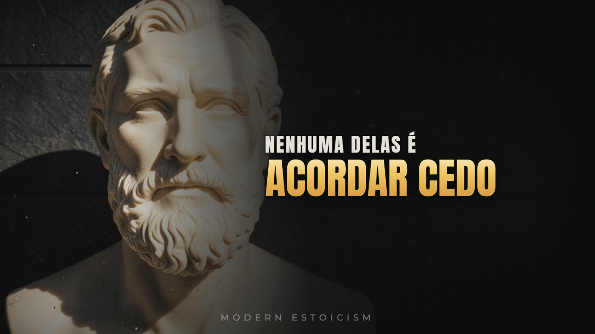
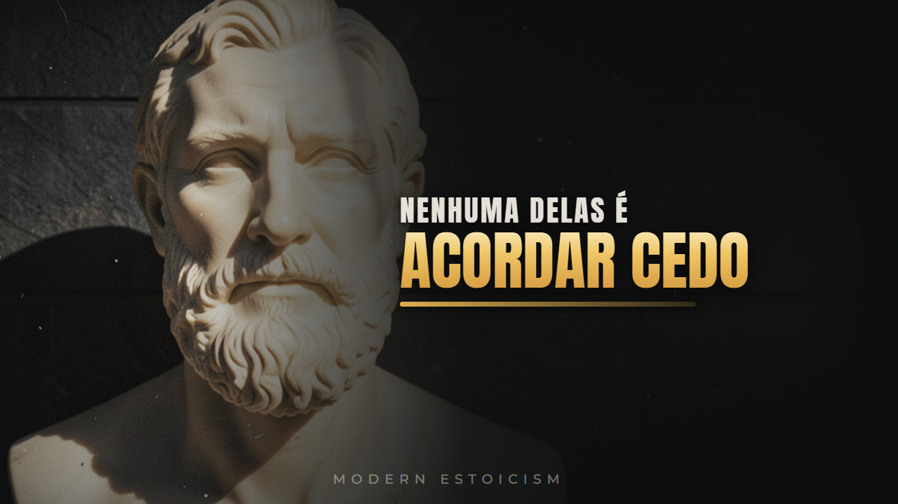
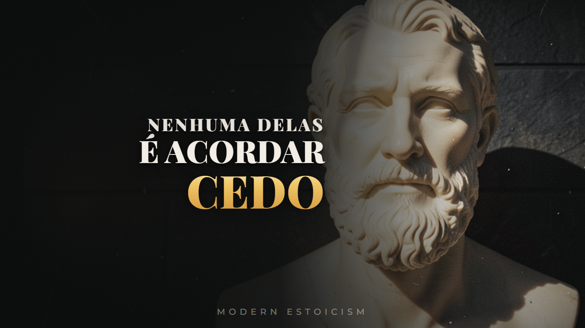
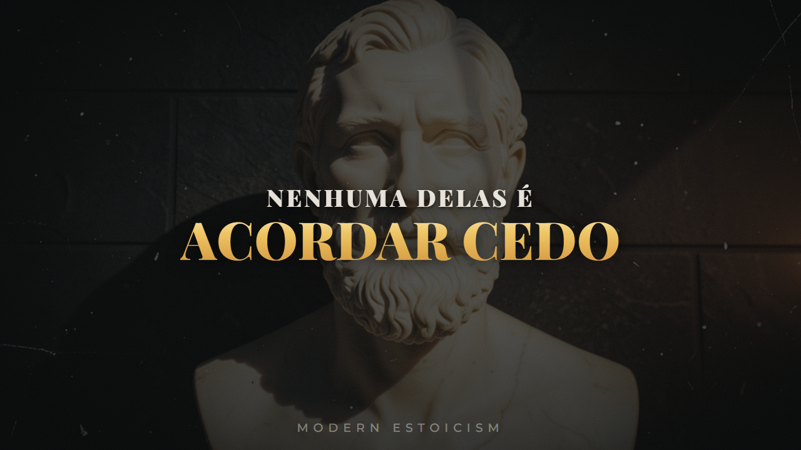

Embalagem — LA3 · "O tempo que ainda sobra"
Canal Modern Estoicism. Título, thumb e SEO na mesma folha, porque
são a mesma decisão. O gate é a coluna pilares antes do corte: pilar
depois do caractere 55 existe no analytics e não existe para quem rola a tela.
Título: EM 7 DIAS VOCÊ RECUPERA HORAS QUE NINGUÉM TE DEVOLVE | 6 práticas estoicas sobre o tempo
Thumb: NENHUMA DELAS É ACORDAR CEDO
EM 7 DIAS VOCÊ RECUPERA HORAS QUE NINGUÉM TE DEVOLVE | 6 práticas estoicas sobre o tempo
88 caracteres · nota 100/100 · risco A
imediatismo sim prazo: em \d+ (minutos?|horas?|dias?|segundos?|semanas?)
curiosidade sim contra_expectativa: ninguem
resolucao sim beneficio: recupera
thumb 0% das palavras repetem o titulo
Candidatos de título
Pontuados na hora por
apps/regra-de-3/pilares.py. A parte apagada do título é o que o feed corta.
| Título | Car. | Nota | Risco |
Pilares
antes do corte | Observação |
|---|
| C1 | EM 7 DIAS VOCÊ RECUPERA HORAS QUE NINGUÉM TE DEVOLVE | 6 práticas estoicas sobre o tempo | 88 | 100/100 | A | 3/3 | recomendado |
| C2 | QUANTO DO SEU DIA NÃO É SEU? em 7 dias você recupera horas | práticas estoicas sobre o tempo | 92 | 100/100 | B1 | 3/3 | B1 — pergunta; o nicho pergunta pouco |
| C3 | O QUE SÊNECA FAZIA TODO DIA PARA NÃO PERDER TEMPO — 6 práticas estoicas sobre o tempo | 85 | 100/100 | A | 3/3 | nota cheia, mas afirma rotina de Sêneca que o roteiro não sustenta |
| C4 | EM 7 DIAS: 6 práticas estoicas para o tempo que ninguém te ensina | 65 | 100/100 | A | 3/3 | curto e limpo; não traz a frase-alvo inteira |
| C5 | COMECE HOJE: 6 práticas estoicas para não perder mais o seu tempo | 65 | 100/100 | A | 3/3 | idem C4, com imperativo no lugar do prazo |
| C6 | EM 7 DIAS VOCÊ RECUPERA O TEMPO QUE NINGUÉM TE DEVOLVE | 54 | 100/100 | A | 3/3 | cabe INTEIRO antes do corte; zero palavra de SEO — candidato a A/B |
| C7 | EM 7 DIAS VOCÊ VÊ O QUE ROUBA AS SUAS HORAS — e recupera o que dá para recuperar | 80 | 80/100 | A | 2/3 | perde um pilar depois do corte |
| C8 | PARE DE PERDER O SEU DIA: em 7 dias você recupera horas que ninguém devolve | 75 | 75/100 | A | 2/3 | perde um pilar depois do corte |
| — | 6 RITUAIS SECRETOS QUE OS ESTÓICOS USAVAM PARA LIDAR COM A ANSIEDADE (EFEITO IMEDIATO) | 86 | 75/100 | A | 2/3 | PUBLICADO — a régua aplicada ao que já está no ar (CTR 2,4%) |
Pacote de SEO
Sem dado de volume de busca — não há ferramenta de SEO configurada
neste repositório. As palavras vêm da observação dos títulos dos canais de
referência, não de medição.
| Frase-alvo | práticas estoicas sobre o tempo
tem de aparecer no título, nos primeiros 150 caracteres da
descrição e na primeira tag — está nos três. |
|---|
Descrição
primeiros 150 |
6 práticas estoicas sobre o tempo, cada uma com um desafio de 7 dias. Nenhuma delas é acordar mais cedo: todas são sobre parar de perder o tempo que você já tem.
161 caracteres; o corte da busca cai
dentro da segunda frase. |
|---|
| Tags | práticas estoicas sobre o tempo, estoicismo sobre o tempo, sêneca sobre o tempo, como não perder tempo estoicismo, sêneca a brevidade da vida, marco aurélio tempo, filosofia estoica tempo, como organizar o tempo estoicismo, parar de procrastinar estoicismo, adiamento sêneca, reflexões estoicas, práticas estoicas, hábitos estoicos, estoicismo diário, cartas a lucílio, sêneca, marco aurélio, epicteto, estoicismo
19 tags · 413 caracteres · da mais específica para a mais
genérica. |
|---|
Descrição completa, capítulos e fontes:
apps/canal-estoico/EMBALAGEM-LA3-tempo.md
Estilos de thumb
A mesma copy e a mesma foto nos cinco desenhos. Comparar
estilo com copy diferente não compara estilo — compara copy. Cada um aparece
grande e a 168 px, que é o tamanho do feed.
E1
Sans monumental · figura à esquerda

EM 7 DIAS VOCÊ RECUPERA HORAS QUE NINGUÉM TE DEVOLVE | …
Modern Estoicism · 12 mil visualizações · há 2 dias
168 px — o tamanho real no feed do celular.
Se a linha dourada não se lê aqui, ela não existe.
O desenho mais comum do nicho (print 91). Anton pesado, texto encostado à esquerda do bloco direito, uma linha dourada e nada mais. É o que menos depende da foto — funciona com qualquer busto.
E2
Serifada clássica · figura à direita
EM 7 DIAS VOCÊ RECUPERA HORAS QUE NINGUÉM TE DEVOLVE | …
Modern Estoicism · 12 mil visualizações · há 2 dias
168 px — o tamanho real no feed do celular.
Se a linha dourada não se lê aqui, ela não existe.
O registro de The Stoic Mode (prints 94/95): Playfair 900, figura à direita olhando para o texto. A serifada envelhece a peça de propósito — é a diferença entre 'dica' e 'doutrina'.
E3
Sans com filete dourado

EM 7 DIAS VOCÊ RECUPERA HORAS QUE NINGUÉM TE DEVOLVE | …
Modern Estoicism · 12 mil visualizações · há 2 dias
168 px — o tamanho real no feed do celular.
Se a linha dourada não se lê aqui, ela não existe.
O E1 com o risco dourado sob a linha-chave, como o print 92. O filete dá chão para o texto que flutua sobre o mármore e reforça o dourado sem gastar uma segunda palavra nele.
E4
Serifada em três linhas · palavra dourada isolada

EM 7 DIAS VOCÊ RECUPERA HORAS QUE NINGUÉM TE DEVOLVE | …
Modern Estoicism · 12 mil visualizações · há 2 dias
168 px — o tamanho real no feed do celular.
Se a linha dourada não se lê aqui, ela não existe.
Quebra a chave em duas para a palavra dourada ficar sozinha na linha — é o desenho do print 93 ('VIDA / SIMPLE'). A palavra isolada é a que mais sobrevive à redução a 168px.
E5
Centralizada · figura ao fundo

EM 7 DIAS VOCÊ RECUPERA HORAS QUE NINGUÉM TE DEVOLVE | …
Modern Estoicism · 12 mil visualizações · há 2 dias
168 px — o tamanho real no feed do celular.
Se a linha dourada não se lê aqui, ela não existe.
Sem divisão de lados: o mármore vira fundo velado e o texto ocupa o centro. É a mais legível aos 168px e a que menos mostra a imagem — serve de controle para saber quanto a figura de fato contribui.